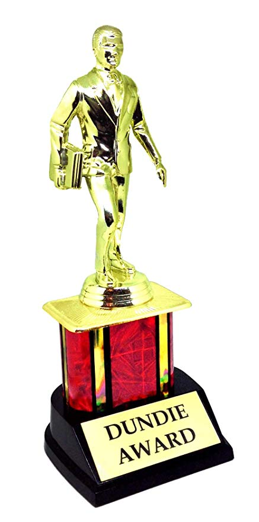

Trivia Game
START
Time Remaining:
60
1. What is the name of David Wallace's invention?
Rip It
Suck It
Nail It
Hang It
2. Micheal burns his foot on his what?
Iron
Fireplace
Cup of Tea
George Foreman Grill
3. What is Erin's real first name?
Kelly
Hope
Janine
Sally
4. What does Dwight use to test the trampoline before Michael jumps?
A bowling ball
Himself
A watermelon
A mannequin
5. According to Jim, where do he and Pam have their first 'date'?
The Steamtown Mall
The office Christmas party
The roof of Dunder Miflin
The parking lot of Dunder Miflin
6. What song is played at the end of the 'Office Olympics'?
The Star Spangled Banner
God Bless the USA
Home on the Range
America the Beautiful
7.What is the only thing Michael tells Pam to bring with her to the Job Fair?
His diary
A business card
A sheet of paper
His suit
8. What is Michael Scarn's tagline after killing someone in 'Threat Level Midnight'?
You just got Scarned
Cleanup on Aisle 5
Here we go again
Look what you made me do
9. Who wants to buy WUPHF.com from Ryan?
Wesley College
Webster University
Washington University
Wagner College
10. Bears, Beets, __________.
Star Wars
Lord of the Rings
Star Trek
Battlestar Gallactica
DONE

All Done!
Answers:
Incorrect Answers:
Unanswered: